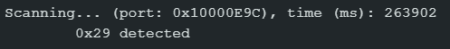
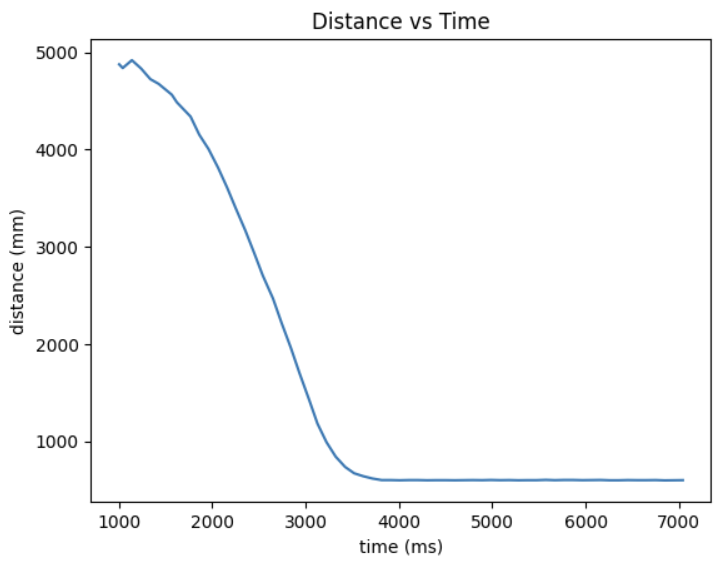
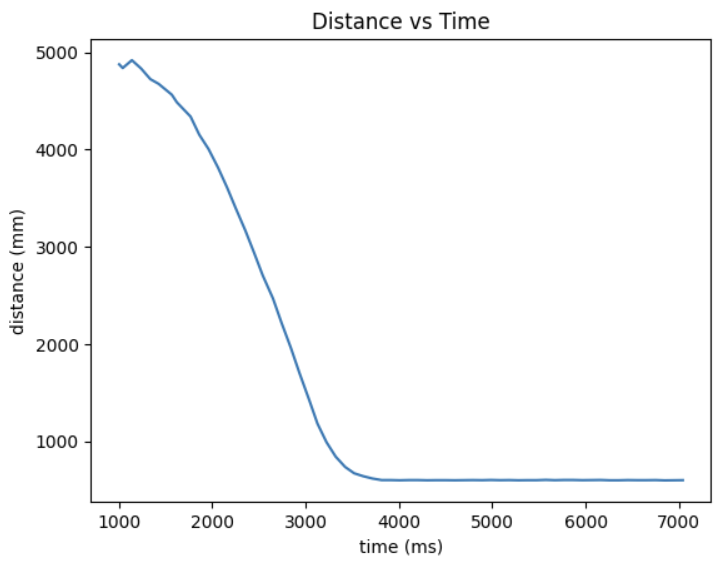
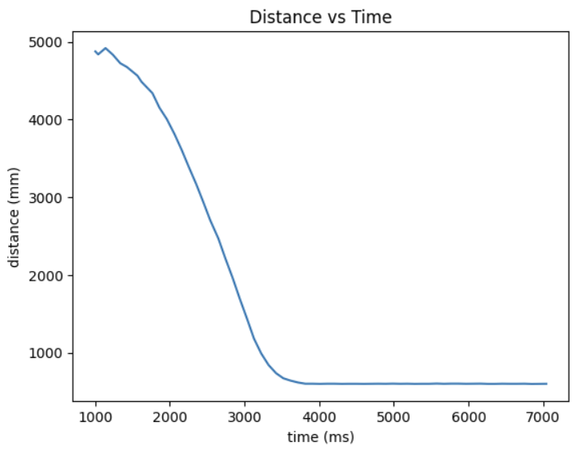

Hi! My name is Jack Strope. I'm currently pursuing my MEng
in Electrical and Computer Engineering at Cornell. I'm most interested in
embedded systems, robotics, and integrated circuit design. This website
documents my projects in ECE 5160: Fast Robots.
Lab 1
This lab focused on becoming acquainted with the Artemis board, including
programming the board with the Arduino IDE (Lab 1A) and bluetooth
communication (Lab 1B).
Lab 1A
In this part of the lab, I hooked up the Artemis board to my laptop and
uploaded several example programs to test the hardware.
Blink
After connecting the board to my computer and selecting the board in the
Arduino IDE, I ran Blink, an example sketch built in to the Arduino IDE. The
program simply swithces the onboard LED on and off every second.
Serial
The next example script run on the board was Serial, which allows the user to
type characters into the Serial Monitor in the Arduino IDE and echoes them
back.
Temperature Sensor
The next example script run was AnalogRead, modified to continuously print
the temperature sensor's reading in Fahrenheit. Notice in the video below,
the temperature starts around 85°F, but after blowing on it for a couple
seconds, it lowers to around 82°F.
Microphone
The last example script run is MicrophoneOutput, which displays the loudest
frequency detected by the microphone.
Middle C Detector
Since I'm enrolled in the 5000-level version of the class, I did the
additional task of making my own script to blink the LED when a "C" note
(~261Hz) is the loudest frequency. To do so, I simply modified the
MicrophoneOutput script, adding a simple conditional that writes HIGH to the
LED if the loudest frequency is between 258Hz and 264Hz (to account for
noise/interference that affect the reading) and LOW otherwise.
Lab 1B
In this part of the lab, I established Bluetooth communication between the
Artemis board and my laptop via Bluetooth Low Energy (BLE).
Prelab
After ensuring the latest version of Python was installed on my computer, I
set up a virtual environment, installed the necessary Python libraries, and
installed the codebase provided in the lab handout. I then activated the
virtual environment and launched JupyterLab.
The next step was to establish a connection between JupyterLab on my computer
and the Artemis board via BLE. To do so, I first ran the ble_arduino.ino
script from the codebase on the board to print its MAC address. I copied
this into the file connections.yaml in the Python virtual environment. I
then generated a UUID using the uuid library in JupyterLab and copied it to
both connections.yaml and ble_arduino.ino. I then verified that the
connection between the board and computer was successful with some test
commands provided in a demo Jupyter notebook.
Task 1
First, I implemented the ECHO command, which simply sends the input string
back with an added prefix and postfix. The implementation is shown below.
Task 2
The next task was to use the SEND_THREE_FLOATS command, which extracts the
three floats from the message sent from JupyterLab to the board and prints
them to the serial monitor. The implementation is shown below.
Task 3
Next, I added a new command GET_TIME_MILLIS which makes the Artemis board
respond with the current time in milliseconds.
Task 4
Next, I defined a notification handler in the Jupyter notebook to extract the
time from the response string sent by the GET_TIME_MILLIS command. The
following code snippets show the handler and then the commands used to
receive the time using the handler.
Task 5
In this task, I determined how fast messages can be sent by making a new
command that repeatedly sends the current time in milliseconds to Jupyter
for 100 iterations.
The code used to receive the messages in Jupyter accepts messages for 10
seconds to ensure all 100 go through. This code and the first several
received timestamps are shown below.
By subtracting the last timestamp from the first and dividing by the number
of messages, we calculate the effective data transfer rate to be 100
messages / (26.165s - 23.596s) = 38.926 messages per second.
Discussion
In this lab, I learned how to connect and program the Artemis board using the
Arduino IDE, and how to connect to it from my computer via Bluetooth. The
ability to connect to the board this way will be extremely useful when the
board is on the robot—it won't be plugged into my computer then, so a
method of wireless communication with the robot will be necessary.
Evaluating how fast data can be sent with different methods will also prove
useful in deciding what methods to use for communication with the robot in
future labs.
Lab 2
In this lab, I tested the IMU by gathering accelerometer and gyroscope data.
This data will allow the robot to keep track of its orientation and
acceleration. At the end of the lab, I also tried controlling the RC car as
it comes in the box with the controller to get a feel for how it can move,
and recorded a couple of stunts.
Setup
Setting up the IMU with the Artemis board was fairly straightforward. After
installing the necessary library in the Arduino IDE, I connected the IMU to
the board using a QWIIC connector. I then ran the library's example script,
which collects and prints the sensor's acceleration, gyroscope,
magnetometer, and temperature data. The data is sent to the MCU via I2C, so
to identify which device to receive data from, the script defines a macro
AD0_VAL, the last bit of the I2C address. For the IMU, this value is 1 by
default. Additionally, I added the following code to the setup() function in
this script and the BLE script to serve as an indication of when the board
starts running.
To more easily monitor the x, y, and z acceleration data, I opened the Serial
Plotter, which plots the data in real time. This is shown in the video
below. When the IMU sits flat on a surface, the x and y acceleration curves
stay steady around 0, while the z curve stays steady around 1000 milli-g, or
1g of acceleration. This is due to gravity accelerating the board downward
at 1g at all times. If I accelerate the board in any direction, the curve
cooresponding to that direction responds accordingly. If I rotate the board,
the acceleration due to gravity shifts from the z-direction to the x/y
directions.
Accelerometer
Next, I modified the example script to calculate the roll and pitch of the
IMU using the following equations.
To check the accuracy, I recorded the measured roll and pitch for -90°,
0°, and 90°. For 0° for both roll and pitch, I held the IMU down
on a flat surface. I measured -90° and 90° for roll and pitch
separately, placing the IMU at 90° relative to the horizontal by holding
it against the side of a box on the desk. The results are shown in the
images below.
0° roll and pitch-90° roll90° roll-90° pitch90° pitch
Though noisy, the data appears very accurate, to within a degree or two in
each of the above measurements.
Time-domain Plots
To analyze the data in Python, I added a new command to the BLE script to
continuously calculate the roll and pitch in a loop and send the data (with
timestamps) to Jupyter. With the data in Jupyter, I then plotted roll and
pitch vs time. The results are in the plots below.
Noise Frequency Analysis
We can analyze the frequency of the noise by plotting the Fourier Transform
of the data. To do so, I used the following Python code to compute and plot
the FFT of the roll and pitch data.
This generated the plots below.
I then gathered new data while gently hitting the table to generate
vibrational noise and repeated the above to generate the following
plots.
Even in these cases, the amplitude drops significantly above 0Hz and stays
relatively consistant after. Based on the plots, I'll estimate the cutoff
frequency to be about 1Hz.
Low-pass Filter
Using this cutoff frequency, I then implemented a simple low-pass filter to
reduce the noise level of data sent to Jupyter.
Replotting this data for both of the above cases, I obtained the following
plots.
Still IMU
IMU with vibrational noise
We can see from the plots that the low-pass filter is quite effective. It can
be made more effective by lowering the cutoff frequency. This would more
aggressively filter out high frequencies (noise), but at the risk of
filtering out data that should be kept.
RC Car Testing and Stunt
To finish this lab, I mounted the battery on the RC car as it comes in the
box and tried it out to get a feel for how it should move. I used the remote
controller to drive the car around the hallway in the video below. It's
worth noting that, at the speed the RC car moves, the tires have very poor
traction on the hallway floor, making it easy to turn in place, but
difficult to steer while moving. This is in large part because, when
controlling it with the RC controller, the motors are either fully on or
fully off, making it difficult to slow down to turn without drifting.
To improve traction, I moved to a carpeted room and tried driving the car
there. The traction was significantly improved, allowing the car to be
controlled—in particular steered—much more easily. It also makes it much
easier to flip the car without requiring as much speed, but this also means
the car is more prone to flipping unintentionally. In this higher-traction
environment, I played around with the car and attempted some stunts. My
favorite—shown in the video below—was what happens when I flip the car
and continue driving the motors at full speed. The car continues flipping
without really moving anywhere. If I steer at the same time, the car looks
like it's breakdancing!
Lab 3
In this lab, I connected and tested two Time-of-Flight (ToF) sensors, and
tested how well both ToF sensors and the IMU can collect data at the same
time. The ToF sensors detect objects and how far away they are, making them
critical for the robot to move autonomously, avoid obstacles, and map out
its environment.
Prelab
Before the lab, I considered some future decisions to make. Both ToF sensors
have the same I2C address (0x52), so to use them at the same time, I decided
to change the address of one sensor as part of the setup function. To do
this, one sensor needs to be powered down via its shutdown pin before
changing the address, so that the two sensors have distinct addresses.
Another decision to make is where to place the ToF sensors on the robot. One
should obviously go on the front, since the robot mostly moves forward. I
considered placing the other on the back so that the robot could detect
obstacles while moving in reverse, but decided it would make much more sense
to place the second sensor on the side, so that the robot can map out its
environment to navigate through a maze, for example. Thus, the robot will be
able to detect obstacles in front of it and to one side, but not behind it
or to the other side. For the sake of obstacle avoidance, the only real case
in which I'll need to be careful is when the robot moves in reverse—the
side sensor will be more for environment mapping than for obstacle
detection.
As for wiring for this lab, the lab kit includes four QWIIC connector
cables—two short and two long. One will be used to connect the Artemis to
the breakout board, and three will be used to connect the breakout board to
the IMU and the two ToF sensors. Since the positions of the ToF sensors are
quite important, and the IMU should be close to the center of the robot
along with the Artemis board and the breakout board anyway, I decided to use
the long wires for the ToF sensors.
Lab Tasks
Battery Power
First, I powered the Artemis board with one of the 650mAh batteries. To do
so, I first had to change the connector on the battery to a JST connector.
I cut the wires (one at a time!) near the old connector, soldered them to
the JST connector wires, and applied heat shrink to insulate the soldered
portion of wire. I then plugged the Artemis board in to the battery to
power it on and sent it commands via BLE to ensure it was properly running
the uploaded BLE script.
First ToF Sensor
Next, I connected the QWIIC breakout board to the Artemis and the first ToF
sensor to the breakout board. To connect the ToF sensor, I cut the four
wires on one of the long QWIIC cables and soldered them to the appropriat
pins on the sensor (red -> VIN, black -> GND, blue -> SDA, and yellow ->
SCL). Since the shutdown pin (XSHUT) needs to be connected on one of the
sensors, I also soldered a wire to this pin and soldered the other end to
pin 2 on the Artemis board. The setup is shown in the picture below.
Next, I ran the Example1_wire_I2C script to make sure the I2C address of the
sensor is being accurately detected. This results in the following output to
the Serial Monitor.

Though the datasheet lists the address as 0x52, the script detects 0x29—this
is 0x52 right-shifted by one. This is because the least-significant bit of
the address is used to identify whether the device is reading or writing,
rather than identifying the device. Thus, the detected address only
considers the upper seven bits.
Finally, I tested the sensor by measuring several distances from the wall at
set positions along a ruler. Of the sensor's three distance modes (short,
medium, long), I decided to use the short mode for now, since this provides
the greatest accuracy, which will be useful for accurately mapping the
robots environment in future labs. When the sensors are mounted on the
robot, I may switch the front sensor to long-distance mode so it can detect
obstacles faster, if it's not detecting obstacles fast enough. My setup for
measuring data is shown below.
I measured 10 distances along the ruler and plotted them below. The
measurements are accurate for the most part for all measured distances,
though accuracy decreases slightly at farther distances.
Two ToF Sensors
Next, I hooked up both ToF sensors simultaneously. I repeated the wiring as
with the first ToF, though I did not connect the shutdown pin since this is
only needed for one sensor.
Lab 4
In this lab, I transitioned from controlling the car manually with the
controller to open-loop control via Arduino code. To do so, I replaced the
PCB inside the car with the Artemis board with two motor drivers, the IMU,
and the two ToF sensors.
Prelab
Since this lab involved many soldered connections to build the full circuit,
it was important to plan out the connections before I started soldering
everything. I decided to use pins
7, 9, 11, and 12 on the Artemis to generate the PWM signals for the
drivers—primarily due to their position at the end of the board making them
optimal for my planned physical configuration. The connections between the
motor drivers, Artemis, and batteries are shown in the diagram below.
Two separate batteries are used here—one powering the Artemis and the other
powering the motor drivers—because the motors draw high current, are very
noisy, and generate significant EMI as they rapidly switch polarity. This
can create large voltage spikes that could interfere with or possibly damage
sensitive electronics.
Lab Tasks
Motor Driver PWM Test
First, I connected one motor driver to the Artemis and to a power supply.
I connected the driver to a DC power bench
set to 3.7V (the battery's voltage) for this part, since the battery doesn't
typically last long. To test that PWM signals can be properly generated and
output to the motors, I used the analogWrite() function to generate PWM signals
on the Artemis and connected an oscilloscope to the cooresponding output of the driver. The
images below show the setup and oscilloscope measurement with one channel
connected to OUT1 and the other to OUT2. Here, OUT1 has a duty cycle of 0 and
OUT2 has a duty cycle of 25% (63 out of 255 max). This corresponds to the
motor spinning in reverse.
Simple code for generating PWM signal cooresponding to the motor spinning in reverse
Setup—the power supply is off to the left side, connected to the red and
black wires on the driver.
Output with 25% duty cycle on channel 1 and 0 on channel 2
Motor Test
Next, I took apart the car to test the motors themselves. I removed the
control PCB and instead connected the leads of one motor to the outputs
of the driver. Placing the car on its side, I then modified the code
above to drive the motor in reverse for one second, then forward for one
second in the loop.
Next, I connected the 850mAh battery to the driver instead of the power bench to
ensure the motor can be driven on battery power. I then repeated the above for
the second motor driver and the other motor.
Car Assembly
With the motors tested, I installed everything to the car, securing the elctronics
in place with tape. The finished product is shown below.
Note that the 850mAh battery is not visible here; it is secured in the battery
compartment on the underside with the wires fed through a hole to the drivers.
I then ran the following test sequence to ensure both motors
were still working properly.
Functions for the test sequence below. Note that the calibration factor is
included—see discussion below.
All wheels spinning in test sequence.
Test sequence on the ground (calibrated).
Lower Limit PWM
Next, I experimented to find the smallest duty cycle for which the robot is able
to move. The lowest duty cycles I found with meaningful movement (see videos
below) were 16.0% for forward/backward movement and 43.3% for spinning in place
(40 and 110 out of 255 for analogWrite).
Forward/reverse at 16% duty cycle. Note that the reverse shown here is slightly
slower. I tried turning the car around for the same test and the opposite results
occured—turns out Phillips 239 has a slight incline.
Spin in place at 43.3% duty cycle
Motor Speed Calibration
When driving straight forward, the car tended to veer
to the left, indicating that the right wheels were spinning faster than the left.
To fix this, I added a calibration factor between 0 and 1 to slow down the right
motor to match the speed of the left motor. I found 0.76 to be
the best value to get the car to drive straight. The fact that this is such a
large damp in speed—along with a strange behavior I noticed where the left motor
shows a large mechanical resistance at a certain angular position—leads me to
suspect a mechanical issue with the left motor, wheels, or gears. The video below shows
the car driving roughly straight for a little over 6ft.
Finally, the video below shows the car performing a right turn.
Lab 5
In this lab, I implemented a PID controller for my robot, allowing it to drive
quickly up to a wall and stop 1ft (304mm) from it.
Prelab
To start, I established a system for collecting data during PID control
tests. I defined global arrays to log the time, distance to the wall,
and duty cycle sent to the motor drivers. I then made a new command, START_PID, to
be called by a Jupyter notebook to run the PID test, log the data, and
send it to Jupyter.
LOG_SIZE is set to 1000, which is large enough that the arrays are never
completely filled. Only the collected data is sent to Jupyter. The code
to call this command and receive the data in Jupyter is shown below.
I also made commands to set the calibration factor and the PID constants
from Jupyter to prevent having to reupload to the Artemis so often.
Arduino side
Python side with example values
I also copied over the required code from Lab 4 to run the motors, including
the following helper functions and setup code.
Helper functions for driving the motors
Code added to setup; I included a line to brake on setup to ensure the motors don't move immediately.
Finally, I added another call to brake() in the loop function to run after
disconnecting from BLE. This way, the motors will automatically stop if
the BLE connection is lost at any time.
Lab Tasks
P controller
I started by implementing a P controller, which uses only a proportional
term to calculate the duty cycle of the PWM output to the motors. I
wrote the following function to be called from the START_PID command.
The function is called within the START_PID command as follows. The
return value is the 0-255 duty cycle output to the motors.
To estimate a starting value for the proportional constant Kp, I
reasoned that Kp is equal to the duty cycle output to the motors
divided by the distance from the target at any time. The maximum
output sent to the motors (127 for now) cooresponds to the maximum distance
detectable by the ToF sensor (4000mm since I set the distance
mode to long). So, Kp can be estimated as 127/(4000 - 304), which is
approximately 0.035. Through experimentation, I optimized this to
0.041. The resultant P controller is demonstrated in the video below.
I plotted the distance and pwm output vs time in the plots below.
PI controller
Next, I added an integral term to my controller. With this term, the
car will quickly pick up speed proportional to an accumulated error
over time. This way, if the car starts far away from the target, it
will quickly "recognize" that it is not making much headway from the P
term, and the I term will rapidly grow, causing the car to quickly
pick up speed. The new controller function is shown below.
To tune the values of Kp and Ki, I followed a heuristic procedure as
discussed in lecture. I started with Ki at 0 and slightly increased
Kp until it overshot the target at Kp=0.044. I then cut this in half
and steadily increased Ki until it slightly overshoots again. Then I
cut this in half and steadily increased Kp until slight overshoot. I
roughly iterated this process to experimentally find the values
Kp = 0.036 and Ki = 0.0003 work the best for this PI controller. The
results are shown in the video demonstration and plots below.
Given more time, there are two modifications I'd like to make to the
controller. First is to add wind-up protection to the integral term.
During tuning, I had to be very conservative with increasing Ki to
prevent the I term from getting too high. Wind-up protection, which
could be implemented by adding the following max_integral logic to
the controller, prevents the I term from overshooting too much when
the car arrives at the target.
Another modification I'd like to add is a derivative term to make
it a PID controller. To do so, I would add a "sliding window" array
to keep track of error values. The gradient between consecutive values
gives the rate of change (derivative) of the error with time. This
would allow the controller to predict when the error will reach 0 and
preemptively adjust the motor output to prevent overshoot.
Lab 6
In this lab, I implemented a PID controller for the robot to maintain its
orientation. To do so, the robot collects data from the IMU to determine
the yaw and spins in place left or right to maintain the initial yaw.
Prelab
Like in the previous lab, I started by establishing a system to
collect log data and send it to Python for debugging and plotting.
For this, I used the same system from the previous lab, replacing
the distance log with a yaw log.
New Arduino command to start PID control and log data
Python side
Lab Tasks
Collecting Yaw Data
The first step was to establish a way to accurately obtain the
yaw at any given time. Instead of simply gathering gyroscope data,
I followed the tutorial provided for using the digital motion processing (DMP),
which allows the accelerometer and gyroscope to be automatically calibrated
to provide accurate roll, pitch, and yaw data. This is useful
because it utilizes both the accelerometer and the gyroscope rather than one
or the other, increasing the accuracy through sensor fusion. What's also
useful about the DMP is that it automatically adjusts for the orientation of
the IMU, so the IMU does not need to lay perfectly flat or be manually
calibrated to provide accurate measurements.
Code added to setup() to initialize the DMP.
Helper function to update the roll, pitch, and yaw global variables.
P controller
Now that I can obtain the yaw at any given time, I implemented the P
controller, largely copying what I did last time for the distance P
controller. The primary modification I made was for the controller to
return a float instead of a uint8_t, since the error can be negative.
Since the yaw is measured in the range -180° to 180°, I also
normalized the error so that if the yaw wraps around past 180 or -180,
the speed is still properly calculated.
The command then converts this to the appropriate PWM duty cycle and
calls the appropriate function to spin the robot (spin_left() if the
error is positive or spin_right() if the error is negative).
P controller function
Updated command
To get an initial value for kp, I considered that it needs to be high
enough that the motors spin relatively fast for any errors above ~20°
or so. So, I started with kp = 3, which seems to be a good choice for the
P controller.
PI controller
Next, I modified the controller to include an integral term. Similar again
to the previous lab, I added an error_sum variable which accumulates
error over time.
Modification to controller function
Lab 7
In this lab, I implemented a Kalman Filter (KF) to improve the PID controller
from Lab 5. The KF supplements the slowly-sampled, noisy data
from the ToF sensor, allowing the robot to drive faster up to the wall and succesfully
stop at the desired distance from the wall.
Estimate Drag and Momentum
To implement the Kalman Filter, I first needed to build a state space
for the system. To do so, I first estimated the drag and momentum
terms for the A and B matrices using a step response. I made a new
command in the Arduino code to drive up to the wall at a set speed
and brake when it gets close enough.
This is essentially the same as the command I used for the PID controller
in Lab 5, but the PID control logic is replaced by logic to simply drive
at 50% duty cycle (127 out of 255) until the robot is 6ft from the wall (I determined this
distance experimentally to prevent it from crashing into the wall). Note
I added logic so that the robot only brakes when the ToF sensor measures
less than 6ft if it's been going for 2 seconds--this is because the
robot starts slightly out of range, so the ToF sensors don't get valid
readings until slightly after it has started moving. For the same reason,
in the distance and speed plots below, I omitted the first several data points
until the sensor is in range and measures valid distances. For the speed
plot below, I also applied a low-pass filter to smooth the data, since the
calculated speeds are rather spiky due to sensor noise from the motors, etc.

The speed of the robot appears to stabilize around 2.74 m/s (negative in
the plot since it's moving toward the wall). To estimate the mass and
drag coefficient, I then calculated the 90% rise time.
\( 0.9 \cdot 2.74 m/s = 2.466 m/s \)
Since the first data point that exceeds this speed overshoots by quite a
bit, I instead used the 84% rise time, which I computed as follows.
Finally, I estimated the drag coefficient and mass as follows. At the
steady-state speed, acceleration is ~0. Taking \( u = 1 \) (since
127 PWM is our max acceleration),
\( 0 = \frac{u}{m} - \frac{d}{m} \cdot v_{ss} \)
\( d = \frac{u}{v_{ss}} = \frac{1}{2.74 m/s} \approx 0.365 \)
To estimate the mass, we use the exponential model of velocity for a first-order system:
Now, we can compute the A and B matrices for the following state-space
equations (credit: Fast Robots lecture notes).
I used the following Python code to calculate the A and B matrices
Next, I discretized the matrices. To do so, I needed the sampling rate
of my setup. Since I already calculated the time differences while
calculating the speeds above, I reused the dt array to find the
sampling rate.
Though not perfectly consistent, my setup samples the data at about 10.12 Hz.
I then discretized the A and B matrices as follows.
Since I flipped my speeds to be positive when calculating d and m above,
I will use the following for my C matrix.
Next, I estimated the measurement and process noise. Since the datasheet
for the ToF sensors lists the ranging error for long-range mode as 20mm,
my measurement noise matrix is
I defined these matrices in Python and defined my Kalman Filter as follows.
Finally, I defined the initial conditions for my KF loop. I decided to initialize
the uncertainty in both position and speed to 20 mm, since this is the uncertainty
in ToF measurements. Then, I ran the KF loop and plotted its predicted positions
vs the measured positions in the same dataset as before.
Since this already appears very accurate, I did not adjust any parameters.
Kalman Filter on the Robot
Next, I implemented the KF on the robot to enable improved control with the
PID controller. I added a new command START_PID_KF, which is mostly identical
to my START_PID command from Lab 5, but after the PWM duty cycle is calculated
by the pid_control() function, it is passed into a new function which predicts
the new position and speed according to the Kalman Filter. This function is
essentially the KF I implemented in Python translated to Arduino.
New global variables and include for matrix math
New function to run the KF in Arduino
Updated loop for the command to run the PID and collect KF data
I then ran the PID controller (the PI controller from Lab 5, but I later
added a D term) and plotted the KF predicted positions against the
measured positions over time. Note that the KF is not affecting the controller
yet—I'm just plotting the output of the KF to ensure it's working
as it was in the Python implementation.
Aside from the deviation at the beginning, the KF-predicted position vs
time aligns very closely with the measured distance, so the Kalman
Filter implemented in Arduino is working very well.
Finally, I inegrated the Kalman Filter into the PID controller. To do so, I
simply switched the way controller measures the current distance to be the
KF-predicted distance. To make the D term more stable, I also switched the
way it is calculated to use the KF-predicted velocity, rather than
differentiating the errors over time, since this is less noisy. I also made
some minor tweaks to the way the duty cycle is calculated and output to the
motors—now, if the calculated duty cycle is negative, the robot reverses
at the calculated speed, rather than coasting. Also, if the magnitude of the
duty cycle is less than a minimum value (35), it brakes, since anything in that
range is too small to move the robot anyway—this was just to eliminate the
hum of the motors trying to spin when the duty cycle was too low. After tuning
the PID coefficients using a similar heuristic method to the lecture notes, the
robot drive up to the wall much faster than before and stop at the right distance
without overshooting or oscillating.
Updated PID controller
Updated control loop
Lab 8
In this lab, I had my robot perform a stunt. The robot starts at
a starting line 8 ft (8 floor tiles) from the wall. It quickly
drives up to the wall, drifts to turn around, and then drives
back to the starting line. The goal was to execute the stunt and
get the robot back to the starting line as fast as possible.
Drift
To perform this stunt, I added a new command, DRIFT, to the Arduino file. When
executed, this command first computes the initial yaw and
stores this for later. It then goes through a sequence of
three "modes" to perform the drift. The first is to drive up to
the wall at max speed until it is close enough. The second
is to execute the PID controller on orientation from Lab 6,
setting the target yaw to the initial yaw + 180°.
I experimented with the P, I, and D terms, and found that the
robot performs a clean drift-turn at this speed with values of
0.4, 0.001, and 10, respectively. Finally, after finishing the
drift, the final step is to return to the starting line at
max speed and then stop.
I considered adding logic to the drift stage to check the yaw in each iteration and use
this to decide when to stop drifting and start returning to the
starting line, but I instead decided to use open-loop control—I.e., manually
deciding when to transition from the drift stage to the return stage. I
accomplished this by storing a timestamp of when the robot starts drifting
and then setting it to stop drifting a set time after that. I tuned this
value experimentally (with another command I added to set the drift time
from Jupyter) to determine that the robot reaches the desired orientation
after drifting for 200ms.
A problem I ran into with the transition between drifting
and returning to the starting line was, if the robot tries to accelerate at max
speed just as it reaches the right orientation, before it has had a chance to
stop and gain traction, it continues drifting and often does donuts in
place, rather than driving straight to the starting line. To fix this, I simply added an
extra step to the beginning of the return stage to have the robot momentarily
brake to stabilize and regain traction before continuing to drive forward. I again
tuned the span of time the robot needs to brake here to find the minimum time
needed to stabilize.
Finally, with the robot able to drift-stop to the correct yaw and brake for just the
right amount of time to regain traction, it simply drives forward at max speed after stabilizing
until it passes the starting line. Again, I tuned the span of time needed to pass the starting line
to determine when the robot should brake to ensure it crosses. The full command is shown below,
followed by my updated orientation PID controller.


 
